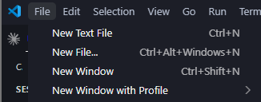
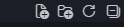
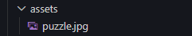
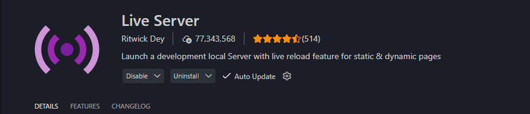
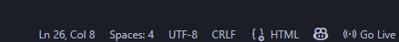
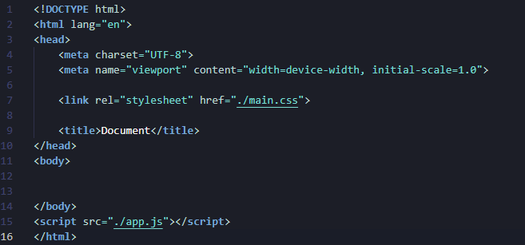
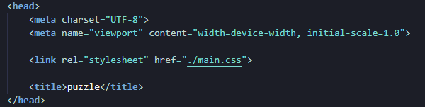

1.1 Maak een nieuwe folder
Maak een nieuwe map met de naam puzzel.
Ga naar de officiële website van Visual Studio Code. Op de startpagina zie je meteen een knop om de versie te downloaden die geschikt is voor jouw besturingssysteem (Windows, macOS of Linux). Klik op de knop om het installatiebestand te downloaden. Zodra je dit hebt gedaan kunnen we aan de slag met programmeren!
Maak een nieuwe map met de naam puzzel.
Open Visual Studio Code en open de nieuwe folder via de navigatie bovenaan. Ga naar File> Open folder en ga opzoek naar de puzzel map en open deze.

Maak de bestanden main.css, app.js en index.html. Gebruik de knoppen bovenaan in de verkenner. Zorg dat de bestandsnamen exact kloppen!

Voeg ook een folder toe genaamd assets. Hierin zullen we de foto van de puzzle toevoegen.

Ga naar extensions en installeer de Live Server-extensie in Visual Studio Code.

Start de Live Server door onderaan op Go Live te klikken. Dit opent een nieuw browservenster met je project.

Open index.html en plak hierin de basisstructuur, of typ "!" en laat de code verschijnen. Link het CSS-bestand in de head van je index.html. Het Css bestand link je bovenaan in de head van het index.html bestand Het JavaScript-bestand link je onderaan in je body.

Geef in de head van index.html tussen de title tags waar voorlopig "Document" staat een gepaste titel, zoals Puzzel.

Nu beginnn we met het echte coderen tussen de body tag geven we onze puzzel eerst even en titel
en
maken
we een div aan waarin onze puzzel zal getekend worden

<h1>Puzzel</h1>
<div id="puzzel-grid"></div>CSS meegeven voor body en title:
met CSS kunnen we de stijl en layout van onze website of puzzel aanpassen, op dit moment hebben we nog niet veel om te stileren maar je mag alvast even deze code plakken in het main.css bestand dit zorgt voor een goede basisstructuur zodat we proper te werk kunnen gaan.
body {
font-family: 'Segoe UI', Tahoma, Geneva, Verdana, sans-serif;
background-color: #f0f4f8;
display: flex;
flex-direction: column;
align-items: center;
justify-content: center;
min-height: 100vh;
margin: 0;
color: #333;
}
h1 {
color: #2c3e50;
margin-bottom: 5px;
}
Ga naar het bestand app.js. Hierin schrijven we de functionaliteiten van onze
puzzel.
We beginnen met het ophalen van onze grid en het aanmaken van de array die de puzzeltegels
voorstelt.
const grid = document.getElementById("puzzel-grid");
let tegels = [0, 1, 2, 3, 4, 5, 6, 7, null];
Onze puzzel bestaat uit 9 posities: 8 zichtbare puzzeltegels en 1 leeg vakje.
Dat lege vakje stellen we in de array voor met null.
We maken nu de functie tekenBord(). Deze functie bouwt het spelbord telkens opnieuw
op
op basis van de huidige volgorde van de tegels.
function tekenBord() {
grid.innerHTML = ""; // Maak het bord leeg voor een nieuwe opbouw
Met forEach() lopen we door alle 9 posities in de array, dus ook door het lege
vakje.
tegels.forEach((tegelWaarde, huidigePositie) => {
Voor elke positie maken we een nieuwe div aan. Die krijgt de klasse
tegel,
zodat we ze straks met CSS kunnen vormgeven.
const div = document.createElement("div");
div.classList.add("tegel");
Daarna controleren we of de tegelwaarde gelijk is aan null.
Is dat zo? Dan gaat het om het lege vakje.
if (tegelWaarde === null) {
div.classList.add("leeg");
} else {Is de tegel niet leeg? Dan bepalen we welk deel van de afbeelding zichtbaar moet zijn.
const x = (tegelWaarde % 3) * -100;
const y = Math.floor(tegelWaarde / 3) * -100;
div.style.backgroundPosition = `${x}px ${y}px`;De x-waarde verschuift de afbeelding horizontaal. De y-waarde verschuift de afbeelding verticaal. Zo toont elke tegel een ander stukje van dezelfde afbeelding.
We voegen ook een klik-event toe aan de zichtbare tegels. De functie
probeerSchuiven() maken we later.
div.onclick = () => probeerSchuiven(huidigePositie);
}Tot slot voegen we elke tegel toe aan het grid.
grid.appendChild(div);
});
}
Onderaan in app.js roepen we de functie aan, zodat het bord effectief wordt
opgebouwd.
tekenBord();Onze JavaScript maakt nu tegels aan, maar zonder CSS zien we nog geen duidelijk puzzelbord. Daarom geven we het grid, de tegels en het lege vakje nu vorm.
#puzzel-grid {
display: grid;
grid-template-columns: repeat(3, 100px);
grid-template-rows: repeat(3, 100px);
gap: 3px;
padding: 5px;
background-color: #333;
}
Met display: grid maken we van onze container een raster.
We maken 3 kolommen en 3 rijen van telkens 100px. Zo ontstaat een puzzelbord van 300px op 300px.
.tegel {
width: 100px;
height: 100px;
background-image: url("assets/puzzle.jpeg");
background-size: 300px 300px;
cursor: pointer;
}Elke tegel is 100px breed en 100px hoog. De volledige afbeelding zetten we op 300px bij 300px, omdat ons bord bestaat uit 3 tegels naast elkaar en 3 tegels onder elkaar.
In JavaScript gebruiken we backgroundPosition om de achtergrond per tegel te
verschuiven.
Daardoor toont elke tegel een ander deel van dezelfde afbeelding.
Gebruik best een vierkante afbeelding. Zet die afbeelding in de map assets en
controleer
of de bestandsnaam exact overeenkomt met de naam in je CSS.
.leeg {
background-color: #d1d9e0;
background-image: none;
cursor: default;
}
De klasse leeg wordt toegevoegd aan het vakje met de waarde null.
Dit vakje krijgt geen afbeelding, omdat het de open ruimte is waarin tegels kunnen schuiven.
.tegel:not(.leeg):hover {
transform: scale(1.03);
filter: brightness(1.1);
}
Met :not(.leeg) zorgen we ervoor dat het hover-effect alleen geldt voor de
zichtbare
tegels
en niet voor het lege vakje.
Nu maken we de functie probeerSchuiven(). Deze functie controleert of een
aangeklikte
tegel
mag verschuiven. Een tegel mag enkel verschuiven als die direct naast het lege vakje staat:
links, rechts, boven of onder.
function probeerSchuiven(gekliktePositie) {
Eerst zoeken we de positie van het lege vakje. In onze array wordt het lege vakje voorgesteld
met
null.
const legePositie = tegels.indexOf(null);Daarna berekenen we de rij en kolom van de aangeklikte tegel.
const geklikteRij = Math.floor(gekliktePositie / 3);
const geklikteKolom = gekliktePositie % 3;We doen hetzelfde voor het lege vakje.
const legeRij = Math.floor(legePositie / 3);
const legeKolom = legePositie % 3;Nu controleren we of de aangeklikte tegel direct naast het lege vakje staat. Dat kan horizontaal zijn, dus op dezelfde rij, of verticaal, dus in dezelfde kolom.
const isBuur =
(geklikteRij === legeRij && Math.abs(geklikteKolom - legeKolom) === 1) ||
(geklikteKolom === legeKolom && Math.abs(geklikteRij - legeRij) === 1);
Alleen als isBuur gelijk is aan true, mogen we de tegel verschuiven.
if (isBuur) {We wisselen de aangeklikte tegel en het lege vakje van plaats in de array.
const tijdelijk = tegels[gekliktePositie];
tegels[gekliktePositie] = tegels[legePositie];
tegels[legePositie] = tijdelijk;Daarna tekenen we het bord opnieuw, zodat de wijziging ook zichtbaar wordt op het scherm.
tekenBord();Later voegen we hier ook nog een controle toe om te kijken of de puzzel opgelost is.
checkWinst();
Tot slot sluiten we de if en de functie af.
}
}Om er een echt spel van te maken, moeten we de tegels willekeurig door elkaar plaatsen. Dit noemen we het “schudden” van de puzzel.
We beginnen met het toevoegen van een knop in onze HTML. Wanneer we op deze knop klikken, wordt de puzzel door elkaar gehusseld.
Plaats dit onder je puzzelbord in index.html:
<button id="schudKnop">Schudden</button>Nu moeten we deze knop ook ophalen in JavaScript. Dit doen we bovenaan in ons bestand, samen met onze andere variabelen, zodat onze code overzichtelijk en gestructureerd blijft.
const schudKnop = document.getElementById("schudKnop");
Met addEventListener zorgen we ervoor dat er een functie wordt uitgevoerd
wanneer we op de knop klikken.
schudKnop.addEventListener("click", schudPuzzel);
Wanneer we op de knop klikken, wordt de functie schudPuzzel() uitgevoerd.
Die functie maken we nu.
function schudPuzzel() {
We gebruiken sort() in combinatie met Math.random()
om de volgorde van de tegels willekeurig te maken.
tegels.sort(() => Math.random() - 0.5);
Math.random() geeft telkens een willekeurig getal terug tussen 0 en 1.
Door hier - 0.5 van te doen, krijgen we zowel positieve als negatieve waarden.
De sort()-functie gebruikt deze waarden om te bepalen in welke volgorde de
elementen
moeten komen. Omdat deze waarde telkens anders is, wordt de array bij elke klik op een andere
manier
door elkaar gezet.
Daarna tekenen we het bord opnieuw, zodat de nieuwe volgorde zichtbaar wordt.
tekenBord();}Wanneer je nu op de knop klikt, wordt de puzzel telkens opnieuw door elkaar gehaald.
Naast de schudknop voegen we ook een knop toe waarmee we de puzzel opnieuw in de juiste volgorde kunnen zetten. Deze knop noemen we de oplosknop.
Plaats deze knop onder de schudknop in index.html:
<button id="oplosKnop">Oplossen</button>
Daarna halen we deze knop bovenaan in ons app.js-bestand op, samen met onze andere
elementen.
const oplosKnop = document.getElementById("oplosKnop");
Met addEventListener zorgen we ervoor dat de functie losPuzzelOp()
wordt uitgevoerd wanneer we op de knop klikken.
oplosKnop.addEventListener("click", losPuzzelOp);
Nu maken we de functie losPuzzelOp(). Deze functie zet de array opnieuw in de
juiste
volgorde.
function losPuzzelOp() {
tegels = [0, 1, 2, 3, 4, 5, 6, 7, null];
tekenBord();
}Wanneer je nu op de knop klikt, wordt de puzzel opnieuw opgelost weergegeven.
Onze knoppen werken nu, maar ze hebben nog geen eigen stijl. Daarom voegen we in
main.css wat extra CSS toe.
button {
padding: 12px 24px;
margin-top: 20px;
background-color: #4a90e2;
color: white;
border: none;
border-radius: 8px;
font-weight: bold;
cursor: pointer;
transition: background 0.3s, transform 0.1s;
}
Met padding maken we de knop groter vanbinnen.
Met margin-top creëren we ruimte tussen de puzzel en de knoppen.
background-color bepaalt de kleur van de knop en color
bepaalt de kleur van de tekst. Met border: none halen we de standaardrand weg.
Door border-radius krijgen de knoppen afgeronde hoeken.
cursor: pointer zorgt ervoor dat je muis verandert wanneer je over de knop gaat.
button:hover {
background-color: #357abd;
}
Met :hover geven we de knop een andere stijl wanneer je er met je muis over
beweegt.
Als laatste willen we controleren of de puzzel opnieuw in de juiste volgorde staat. Wanneer dat zo is, tonen we een bericht op het scherm.
We voegen eerst een leeg tekstvak toe in index.html.
Hierin kunnen we later de winmelding tonen.
<p id="win-bericht"></p>
Daarna halen we dit element bovenaan in app.js op, samen met onze andere elementen.
const berichtElement = document.getElementById("win-bericht");
Nu maken we de functie checkWinst(). Deze functie controleert of elke tegel opnieuw
op de juiste positie staat.
function checkWinst() {
We gebruiken every(). Deze methode controleert of elk element in de array aan een
bepaalde voorwaarde voldoet.
const gewonnen = tegels.every((tegel, index) => {
De laatste positie is een uitzondering. Daar moet het lege vakje staan, dus daar verwachten we
null.
if (index === tegels.length - 1) {
return tegel === null;
}Voor alle andere posities controleren we of de waarde van de tegel gelijk is aan de index. Zo weten we of elke tegel opnieuw op de juiste plaats staat.
return tegel === index;
});
Als alle controles kloppen, is gewonnen gelijk aan true.
Dan tonen we een winmelding.
if (gewonnen) {
berichtElement.textContent = "Proficiat! Je hebt de puzzel opgelost.";
} else {
berichtElement.textContent = "";
}
}
De functie checkWinst() bestaat nu, maar ze wordt nog nergens uitgevoerd.
Daarom voegen we ze toe aan de functie probeerSchuiven(), net nadat het bord
opnieuw
getekend wordt.
tekenBord();
checkWinst();Zo wordt na elke geldige zet gecontroleerd of de puzzel opgelost is.
We wissen ook de winmelding wanneer de puzzel opnieuw geschud wordt.
Voeg daarom deze regel toe aan schudPuzzel():
berichtElement.textContent = "";
De functie schudPuzzel() ziet er dan zo uit:
function schudPuzzel() {
tegels.sort(() => Math.random() - 0.5);
berichtElement.textContent = "";
tekenBord();
}Je hebt nu een volledig werkende schuifpuzzel gebouwd. De puzzel kan getekend worden, tegels kunnen verschoven worden, de puzzel kan geschud worden en er verschijnt een melding wanneer de puzzel opgelost is.